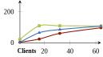
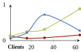

Just like SPARQL query endpoints are costly for publishing RDF on the Web,
SPARQL-like RSP engines are costly for publishing RDF streams.
Instead of fully processing server-side,
let clients do part of the query work
TPF-QS: Client-side RDF Stream Processing (Taelman 2016)
- Client interacts with the low-cost Triple Pattern Fragments server interface

How does TPF-QS compare to other RDF Stream Processing (RSP) engines, both formally and experimentally?
TPF-QS is a client-side RSP engine
-
RDF streams are annotated with their time validity
-
Expose (non-volatile) RDF streams through a TPF interface
-
Client re-executes the query when result expires
RDF stream annotation to indicate expiration times
Assumption: validity duration of each stream element is predefined
- 09:15 - 09:20
radio:my m:plays song-x
- 09:20 - 09:25
radio:my m:plays song-y
- 09:25 - 09:30
radio:my m:plays song-z
Can be serialized as named graphs, singleton properties, reification, ...
Triple Pattern Fragments, (Verborgh 2016)
a low-cost Linked Data interface
- Server exposes triple pattern interface over HTTP:
http://fragments.dbpedia.org/2016-04/en
?subject=<subject>&predicate=<predicate>&object=<object>
- Clients evaluate full SPARQL queries client-side
- → Lowers server load
Client evaluates only when needed
Continuous SPARQL query:
SELECT ?song WHERE { radio:my m:plays ?song }
RDF Stream:
- 09:15 - 09:20
radio:my m:plays song-x
- 09:20 - 09:25
radio:my m:plays song-y
- 09:25 - 09:30
radio:my m:plays song-z
Query results:
- 09:15
song-x
- 09:20
song-x
- 09:25
song-x
Client evaluates only when needed
Continuous SPARQL query:
SELECT ?song WHERE { radio:my m:plays ?song }
RDF Stream:
- 09:15 - 09:20
radio:my m:plays song-x
- 09:20 - 09:25
radio:my m:plays song-y
- 09:25 - 09:30
radio:my m:plays song-z
Query results:
- 09:15
song-x
- 09:20
song-x
- 09:25
song-x
Client evaluates only when needed
Continuous SPARQL query:
SELECT ?song WHERE { radio:my m:plays ?song }
RDF Stream:
- 09:15 - 09:20
radio:my m:plays song-x
- 09:20 - 09:25
radio:my m:plays song-y
- 09:25 - 09:30
radio:my m:plays song-z
Query results:
- 09:15
song-x
- 09:20
song-x
- 09:25
song-x
RSP-QL: A unifying RSP Query Model (Dell'Aglio 2014)
Captures the differences between DSMS systems such as CQELS, C-SPARQL.
Extension of RDF and SPARQL, adding time semantics.
RDF stream S: unbounded sequence of pairs (τ, t).
τ: RDF statement
t: Time instant
RSP-QL applies windows to streams
- A window
W takes a chunk out of the potentially infinite stream.
- The output of a windowing operation is a time-varying graph
GW.
-
Query evaluation over
GW at certain time instants.
Different policies exist to determine these time instants.
e.g.: periodic, on content-change, ...
TODO: add figure of window
TPF-QS in terms of RSP-QL (summary)
-
Stream elements annotated with time intervals
Intervals indicate valid time.
-
Tumbling time-based window, width = 1 time unit
Forms a sequence of consecutive windows for each time unit.
Simple query evaluation, as the resulting GW is atemporal.
-
Mapping-expire policy
Query is (re-)evaluated when previous result mappings expire.
Does not exist in other RSP engines, only possible because of valid time on statements.
TPF-QS in terms of RSP-QL: example
TODO: if time left
Comparison of Operational Semantics under RSP-QL (summary)
| Feature |
TPF-QS |
C-SPARQL |
CQELS |
| Volatile streams |
No |
Yes |
Yes |
| Data retrieval |
Pull |
Push |
Push |
| Time annotation |
Time Interval |
Timestamp |
Timestamp |
| Window policy |
Mapping-expire |
Window-close + Non-empty |
Content-change |
Experimental comparison using CityBench (Ali 2015)
-
RSP benchmarking suite based on real-world sensor data
Streams have a low volatility, ideal for TPF-QS
-
Relevant metrics for RSP
Result completeness: result streams vs expected streams
Scalability: CPU usage and execution time
Result latency: Delay until each stream element appears as result
-
Adapters for benchmarking C-SPARQL and CQELS
Adaptation of CityBench for TPF-QS
CityBench does not work out-of-the-box with TPF-QS, so changes were needed.
-
Queries only available in C-SPARQL and CQELS syntax
Equivalent SPARQL 1.1 queries were created for TPF-QS
Transformation algorithm in appendix
-
Assumption of server-side engines
Multi-client support was added for single TPF server and multiple TPF-QS clients
Client CPU usage and bandwidth usage is also measures
Experimental Setup of CityBench
- TPF-QS, C-SPARQL, CQELS
- 1 server machine, 8 client machines
- 6 CityBench queries (resulting frequency of 10 seconds)
- Concurrent clients: 1, 16, 32, 64
- 15 minutes experiment runtime
TPF-QS achieves lower server CPU usage and lower latency for simple queries
|
Q1 |
Q2 |
Q3 |
| CPU |
|
|
 |
| Latency |
|
|
 |
TPF-QS reaches higher server load for complex queries because of increased data transfer
*C-SPARQL fails for Q11
TPF-QS client load initially peaks,
and then drops
- Load does not drop for Q2 and Q9,
because query evaluation duration > query frequency (10 seconds)
Conclusion: there is potential for lightweight streaming interfaces
-
TPF is good for publishing slow streams
TPF-QS is effective for simple queries, but not for complex queries.
-
TPF is not good for publishing fast streams
HTTP delay becomes too significant.
-
Research on alternative interfaces is needed
TPF with a temporal index?
TPF with streaming responses?
...